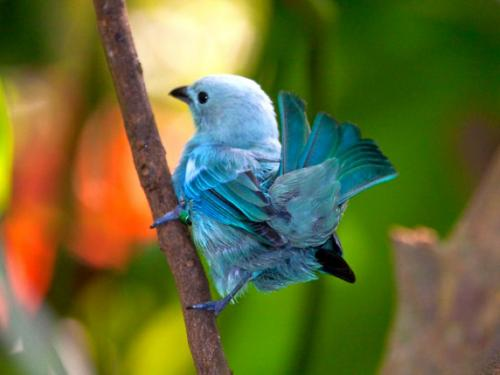

Novedades

El fascinante vuelo de las aves
Hacer avistamiento de aves en Colombia es una tarea que demanda paciencia, cautela y constancia, pero cuando se logra ver su vuelo alegre y maravilloso, o escuchar sus trinos y sus cantos, resulta una de las experiencias más gratificantes. Y qué mejor que vivirlo en el Eje Cafetero, otra de las zonas pródigas en población de estos seres alados, donde la actividad de observación resulta un plan suplementario ideal en medio de todas las posibilidades turísticas.